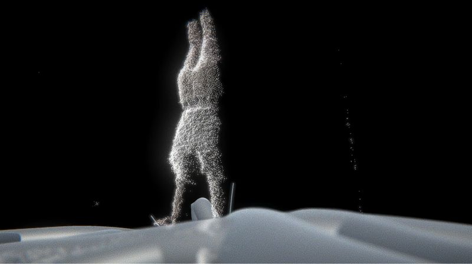
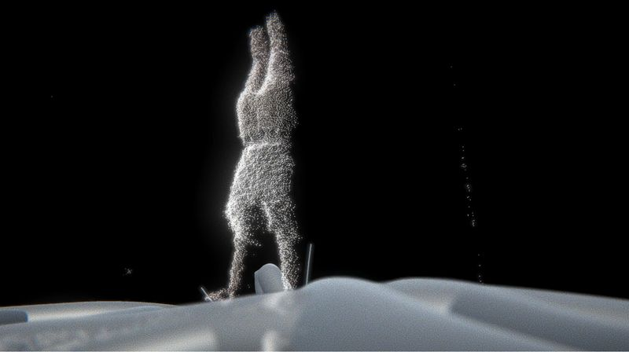

Heterotopia
2020 Laval Virtual RectoVerso (virtual edition)
Kinectic VR Experience. Collaboration with Tamanoir
Un phare étrange apparaît dans les rêves autour du monde. Endormez vous et naviguer sur les courants de pensée afin de découvrir l’origine de cette bâtisse onirique. En vous déplaçant sur votre lit, naviguez littéralement sur un courant de penser au milieu des autres rêveurs. Découvrez progressivement l’histoire de la gardienne de phare qui reçoit les visites des rêveurs chaque nuit. Laissez votre empreinte grâce à une direction artistique qui utilise la kinect pour garder un souvenir de votre corps réel dans l’installation.
Colonia
Interactive installation
Colonia est un dispositif interactif qui demande à l’utilisateur de prendre la position d’une silhouette qu’il voit
projetée à l’écran. Une fois la figure reproduite il accède à un espace numérique où son corps est projeté face à
une statue. Il peut alors interagir avec cette statue en positionnant son corps à l’intérieur. Chaque mouvement
agite le nuage de point et recrée un tableau abstrait mêlant les deux corps, celui de la statue et celui de
l’utilisateur. Puis le dispositif revient à l’état initial et propose une autre silhouette.
Exposition
2019 _ Espace Jean-Roger Caussimon (Tremblay-en-France, France)
Ether
Interactive visual performance (2018)
La performance est conçue pour deux personnes. La première incarne le corps physique et numérique tandis que la seconde contrôle l’espace numérique vidéoprojeté. C’est également une installation que le public peut parcourir après la performance. La pièce se compose d’équilibres, de poses et mouvements. Musique et projection vidéo créent des interactions dynamiques entre espace réel et espace numérique. Elle raconte l’histoire d’une optique focalisée sur un habitant d’une ville. C’est une caméra de surveillance à vision scopique, une rétine qui voit la nuit. Elle capture l’âme du citadin et la projette dans un univers parallèle, un univers numérique.
.jpg)
.jpg)
.jpg)
.jpg)
.jpg)

 
